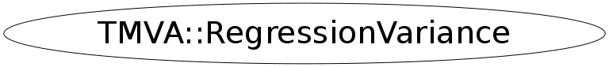

Function Members (Methods)
public:
| virtual | ~RegressionVariance() |
| static TClass* | Class() |
| TString | GetName() |
| Double_t | GetSeparationGain(const Double_t& nLeft, const Double_t& targetLeft, const Double_t& target2Left, const Double_t& nTot, const Double_t& targetTot, const Double_t& target2Tot) |
| virtual Double_t | GetSeparationIndex(const Double_t& n, const Double_t& target, const Double_t& target2) |
| virtual TClass* | IsA() const |
| TMVA::RegressionVariance& | operator=(const TMVA::RegressionVariance&) |
| TMVA::RegressionVariance | RegressionVariance() |
| TMVA::RegressionVariance | RegressionVariance(const TMVA::RegressionVariance& s) |
| virtual void | ShowMembers(TMemberInspector& insp) |
| virtual void | Streamer(TBuffer& b) |
| void | StreamerNVirtual(TBuffer& b) |
Data Members
protected:
| TString | fName | name of the concrete Separation Index impementation |
Class Charts
{kind=link}
{kind=link}
{kind=link}
{kind=link}

Function documentation
Double_t GetSeparationGain(const Double_t& nLeft, const Double_t& targetLeft, const Double_t& target2Left, const Double_t& nTot, const Double_t& targetTot, const Double_t& target2Tot)
Separation Gain: the measure of how the quality of separation of the sample increases by splitting the sample e.g. into a "left-node" and a "right-node" (N * Index_parent) - (N_left * Index_left) - (N_right * Index_right) this is then the quality crition which is optimized for when trying to increase the information in the system for the Regression: as the "Gain is maximised", the RMS (sqrt(variance)) which is used as a "separation" index should be as small as possible. the "figure of merit" here has to be -(rms left+rms-right) or 1/rms...
Double_t GetSeparationIndex(const Double_t& n, const Double_t& target, const Double_t& target2)
Separation Index: a simple Variance